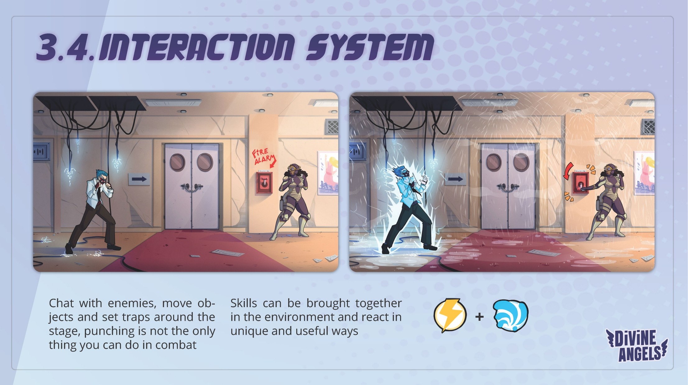
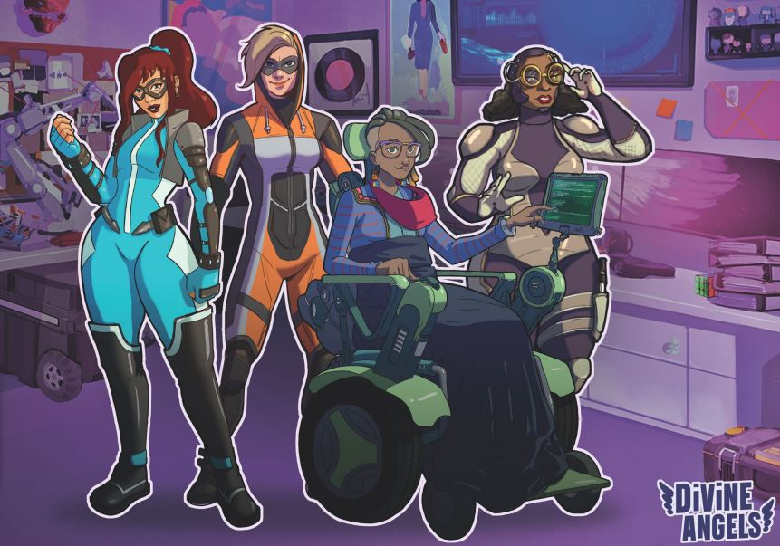

Persona meets Divinity. Vida cotidiana, combate táctico y decisiones que importan.
Divine Angels es un RPG de acción sobre 4 supermujeres que compaginan trabajo, familia y vida social con proteger la ciudad de un aumento inexplicable de supervillanos. El día se divide en mañana, tarde y noche — tú decides cómo invierte su tiempo cada personaje, y esas decisiones tienen consecuencias directas en el combate y la narrativa.
El juego combina combate táctico por turnos en entornos 3D con interacciones sociales, sistema de investigación de crímenes, economía de recursos y decisiones narrativas ramificadas. Todo está conectado: lo que haces fuera del combate cambia lo que puedes hacer dentro.
Del RPG clásico al puzzle táctico.
El sistema de combate pasó por una evolución significativa durante el desarrollo. El diseño original era correcto en papel — pero aburrido en la práctica.
El combate RPG clásico funcionaba mecánicamente pero no generaba decisiones interesantes. Los jugadores repetían la misma estrategia en cada encuentro.
Rediseñamos hacia combate táctico en entornos 3D inspirado en Divinity: Original Sin. Las habilidades interactúan con el entorno: mojar el suelo, colocar una máquina encima, lanzar un rayo — electrocución en área.
Cada combate se convirtió en un puzzle con múltiples soluciones. El entorno pasó de ser decorado a ser una herramienta activa de diseño.


La personalidad como mecánica de combate.
En lugar de que hablar fuera solo una opción pasiva, diseñamos un sistema donde cada enemigo tiene una personalidad que responde de forma diferente según cómo le hablas.
Más fácil lograr la rendición. Pero el enemigo se vuelve más inteligente tácticamente y buscará escapar.
Más agresivo pero descuidado. Difícil de rendir pero fácil de manipular y tender trampas.
El objetivo ideal. Requiere leer la personalidad correcta. Ganar sin violencia siempre es una opción.

Cuatro vidas, cuatro poderes, árboles de habilidad únicos.
Cada personaje tiene una vida profesional propia y poderes que evolucionan según cómo los uses en combate, generando árboles de habilidad distintos en cada partida.

Poderes físicos para combate cuerpo a cuerpo. Divertida pero protectora. Alta agilidad y carisma.
Poderes psíquicos para doblar la voluntad y manipular la realidad. Alta inteligencia.
Controla agua, hielo, viento, fuego, tierra y rayos. La que más interacciones de entorno genera.
En silla de ruedas con gadgets avanzados. Alta inteligencia y poder tecnológico.

Un proyecto universitario que llegó a inversores reales.
Interés inversor. Cancelación por contexto, no por calidad.
Divine Angels se presentó a inversores que mostraron interés real. La cancelación no fue por falta de calidad del diseño — fue por el contexto de ser un proyecto universitario sin el respaldo de un estudio establecido. Una lección valiosa sobre cómo el posicionamiento importa tanto como el producto.
↓ Descargar Dossier del ProyectoLo que este proyecto me enseñó como diseñador.
Abandonar el sistema de combate original fue difícil. Pero reconocer que algo funciona en papel y falla en práctica, y actuar sobre eso, es lo que separa un buen diseñador de uno que se aferra a su primera idea.
Un cambio en el diálogo afecta al balance, que afecta a la dificultad, que afecta a la narrativa. Pensar en sistemas aislados genera problemas en la integración.
Divine Angels era muy ambicioso para el tiempo disponible. Aprendí a definir el MVP real de un diseño — qué sistemas son el núcleo y cuáles son features prescindibles para validar la experiencia.
La presentación, el contexto y el respaldo institucional importan tanto como la calidad del diseño. Una lección que cambió cómo pienso en la producción y el posicionamiento de proyectos.